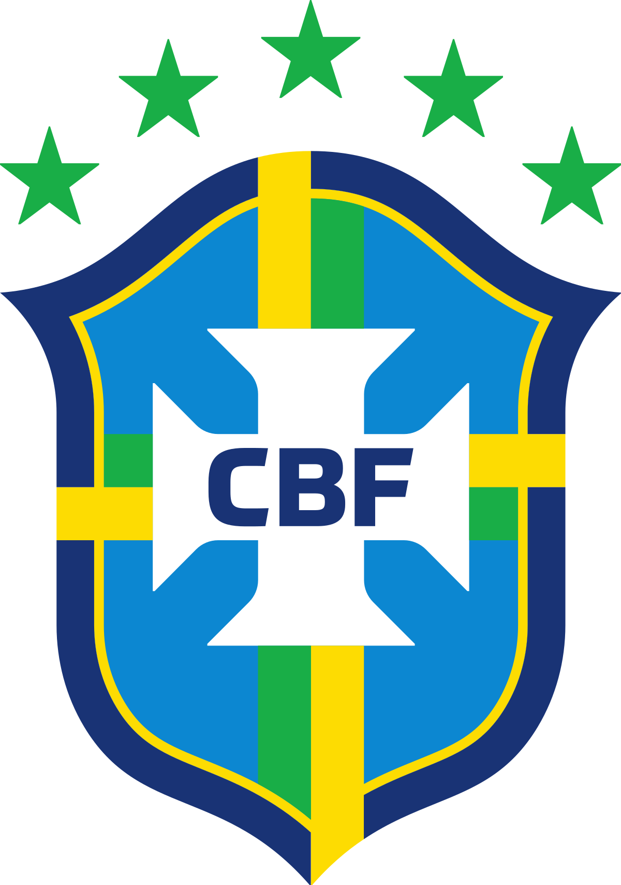
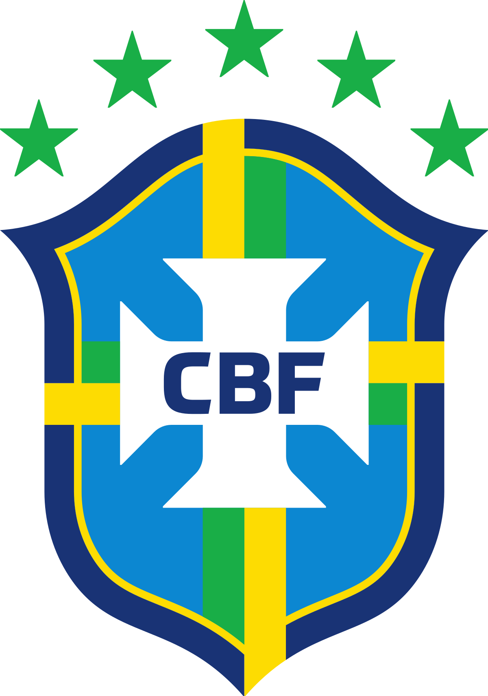

saluran mobilitas sosial


 

• Santos FC
Neymar memulai karir profesionalnya di Santos FC di Brasil. Di sini, dia menunjukkan bakat luar biasa sebagai pemain serba bisa. Ia mencatat banyak prestasi dan memecahkan rekor dunia selama bermain untuk klub ini.
• Barcelona
Pada tahun 2013, Neymar bergabung dengan FC Barcelona di Spanyol. Di sini, ia membentuk trio menakjubkan bersama Lionel Messi dan Luis Suárez. Bersama Barcelona, Neymar memenangkan beberapa gelar, termasuk Liga Champions UEFA dan La Liga.
• Paris Saint-Germain (PSG)
Pada tahun 2017, Neymar pindah ke PSG di Prancis dengan transfer yang menggemparkan dunia. Di PSG, ia menjadi salah satu pemain bintang dan terus memperkuat reputasinya. Neymar telah memenangkan beberapa gelar domestik bersama PSG, termasuk Ligue 1 dan Coupe de France.
• Tim Nasional Brasil
Neymar juga telah bermain untuk Tim Nasional Brasil dalam tiga Piala Dunia. Meskipun tidak terpilih untuk Piala Dunia 2010, dia telah mencetak banyak gol dan menjadi andalan tim nasional Brasil.